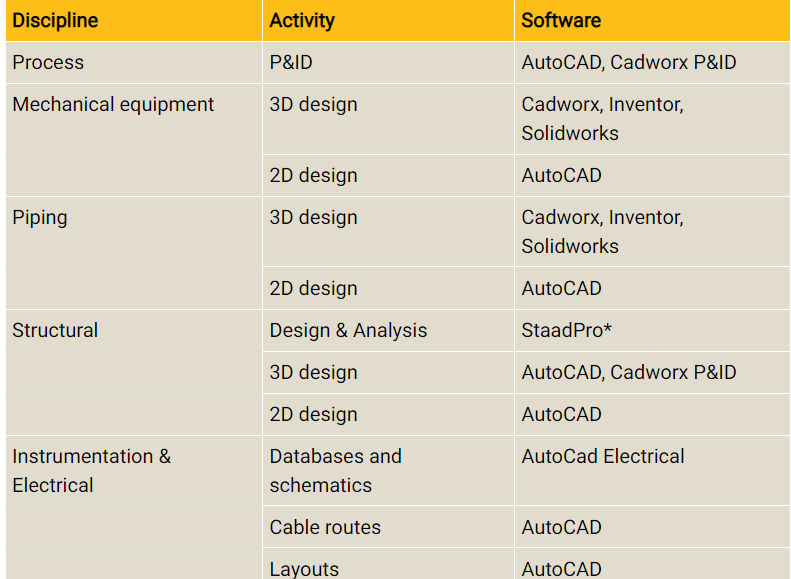

Key features of our company
HISTORY
- 1996 - Aniruddha & Vivek started business activities. Both worked with Tata Honeywell Ltd. (now, Honeywell Automation India Ltd.)
- 1999 - Trans Tech Projects Pvt. Ltd. is registered with aim of providing Automation & Engineering Services globally.
- 2000 – Started relationship with 1st US based client and still working for the same client on various projects.
- 2001 / 2006 / 2010 - Received ISO 9001:2008 certification & re-certification.
- 2017 - Received ISO 9001:2015 certification.
- Gradual growth over 100 resources in past 16 years.
- Served more than 100 clients in USA, Canada and all over the world with repeat clientele.
SOFTWARE TOOLS

QUALITY
Trans Tech Projects is committed to a Quality Management System to provide cost-effective, timely and customer focused solutions. We practice open & participative work environment for continual improvement in quality of our processes, products, services & quality management systems to achieve customer satisfaction. Our Quality Management System is certified as per ISO 9001 : 2015.